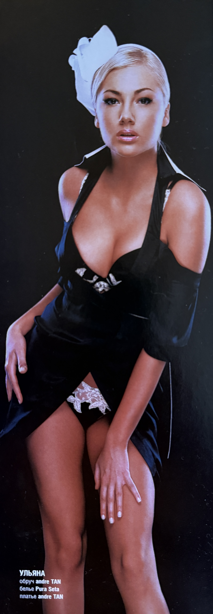
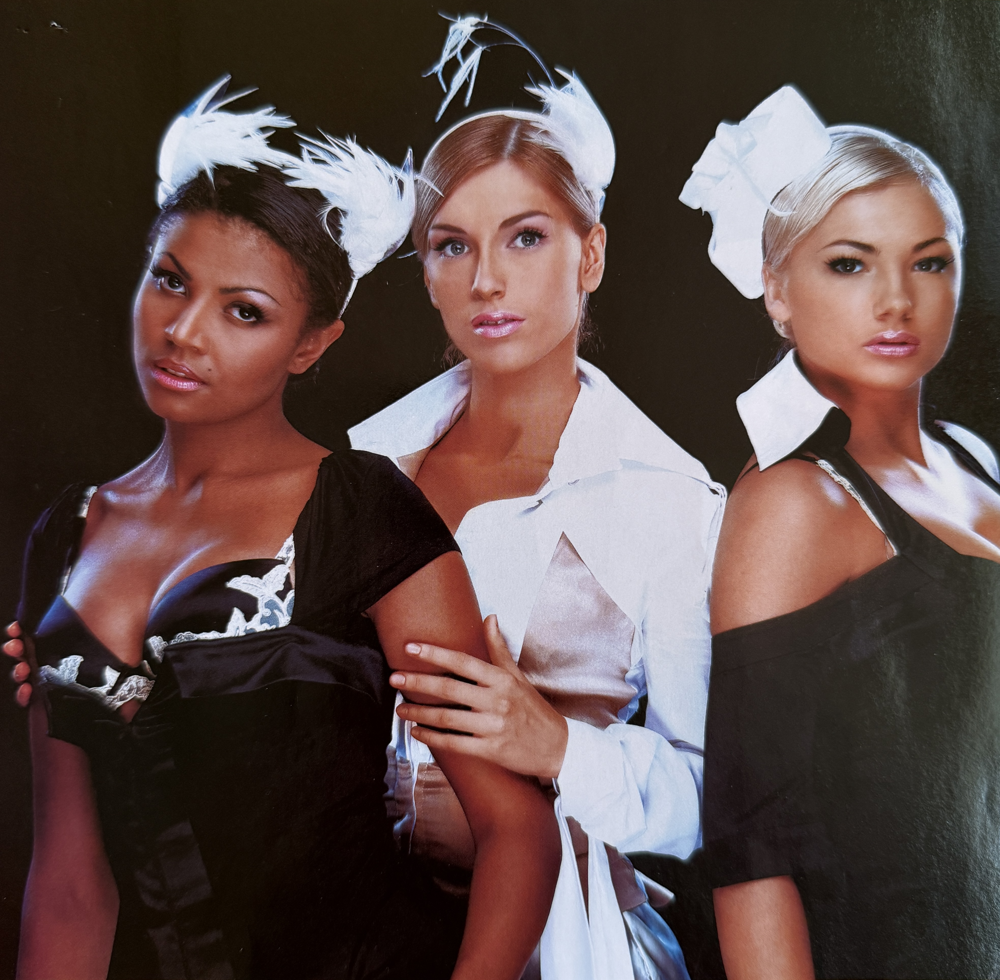

EGO Magazine Feature – TRISHI “Три меча и ландыши” (November 2006) – Uliana Latyk

Basic Information
| Publication | EGO |
| Material Type | Magazine Feature / Photo Editorial |
| Feature Title | Три меча и ландыши |
| Group | TRISHI (ТРИШИ) |
| Group Members Featured | Uliana Latyk, Yuliia Andrushchenko and Gabriella Massanga (Габріелла Массанга) |
| Current Stage Name | Ana Danch |
| Month / Year | November 2006 |
| Exact Date | Unknown |
| Issue Number | Unknown |
| Feature Start Page | 12 |
| Photographer | Dmytro Peretrutov (Дмитро Перетрутов) |
| Language | Russian |
| Archive Category | Press / Magazine Feature |
| Preserved Materials | Three magazine images |
Description
This preserved magazine material documents a feature on the Ukrainian group TRISHI (ТРИШИ) published in EGO magazine in November 2006.
The feature is titled «Три меча и ландыши». The preserved contents page identifies the group and points to page 12, where the feature begins.
The material documents a TRISHI lineup consisting of Uliana Latyk, Yuliia Andrushchenko and Gabriella Massanga (Габріелла Массанга). Uliana Latyk is now known professionally as Ana Danch.
The preserved photographs form part of the magazine’s visual presentation of the group and include a dedicated portrait of Uliana Latyk as well as a group photograph of the three members represented in this specific feature.
Photography for the feature is credited to Dmytro Peretrutov (Дмитро Перетрутов).
Archive Information
| Original Name | Uliana Latyk |
| Current Stage Name | Ana Danch |
| Group | TRISHI (ТРИШИ) |
| Other Group Members Featured | Yuliia Andrushchenko and Gabriella Massanga (Габріелла Массанга) |
| Publication | EGO |
| Feature | Три меча и ландыши |
| Month / Year | November 2006 |
| Archive Category | Press / Magazine Feature |
| Preserved Material | Contents page, Uliana Latyk portrait and TRISHI group photograph |
Credits
| Group | TRISHI (ТРИШИ) |
| Group Members Featured | Uliana Latyk, Yuliia Andrushchenko and Gabriella Massanga |
| Uliana Latyk | Now known professionally as Ana Danch |
| Photography | Dmytro Peretrutov (Дмитро Перетрутов) |
| Article Author | Not identified in the preserved material |
Source Information
| Source Type | Original Magazine Material |
| Publication | EGO |
| Feature Title | Три меча и ландыши |
| Contents Entry | Группа «Триши» |
| Feature Start Page | 12 |
| Month / Year | November 2006 |
| Exact Publication Date | Not identified |
| Issue Number | Not identified |
| Photographer | Dmytro Peretrutov (Дмитро Перетрутов) |
| Members Documented | Uliana Latyk, Yuliia Andrushchenko and Gabriella Massanga |
| Printed Name on Uliana Portrait | УЛЬЯНА |
| Printed Fashion Credit | обруч andre TAN |
| Printed Fashion Credit | белье Pura Seta |
| Printed Fashion Credit | платье andre TAN |
Archive Materials
EGO magazine contents page identifying the TRISHI feature «Три меча и ландыши» beginning on page 12.

Magazine portrait of Uliana Latyk from the November 2006 EGO feature on TRISHI.

TRISHI group photograph documenting Uliana Latyk, Yuliia Andrushchenko and Gabriella Massanga in the November 2006 EGO magazine feature.
Notes
This EGO magazine feature documents Uliana Latyk’s professional activity as a member of TRISHI in November 2006. Uliana Latyk is now known professionally as Ana Danch.
The members documented in this specific feature are Uliana Latyk, Yuliia Andrushchenko and Gabriella Massanga (Габріелла Массанга).
The membership of TRISHI changed during the group’s period of activity and could change more than once within the same year. This archival record therefore documents only the lineup represented in this specific EGO magazine feature and does not imply that the same lineup remained unchanged throughout 2006.
The preserved contents page identifies page 12 as the beginning of the feature. The exact issue number and exact publication date have not been confirmed and are therefore not supplied by assumption.
The Uliana Latyk portrait preserves the printed name «УЛЬЯНА» together with fashion credits for andre TAN and Pura Seta. These details are reproduced as printed in the original magazine material.
Photography is credited to Dmytro Peretrutov (Дмитро Перетрутов). No article author has been identified from the preserved material.